اشتراک فایل در شبکه داخلی و نمایش در اندروید

اشتراک فایل در شبکه داخلی و نمایش در اندروید
.قبل از انجام مراحل از متصل بودن کامپیوتر و تلفن اندرویدی خود به یک مودم مطمئن شوید
.جدید با نام کاربری و پسورد دلخواه در ویندوز بسازید user یک
.فایل هایی که نیاز به اشتراک دارند را درون یک پوشه بریزید
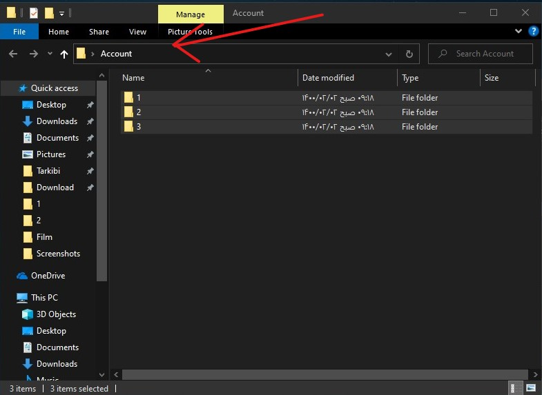.را انتخاب کنید Propertis بر روی فولدر راست کلیک کنید و گزینه
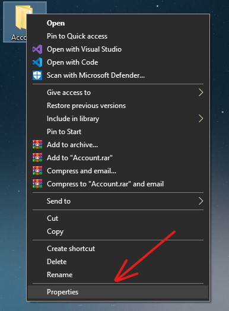.کلیک کنید Share... بروید و سپس روی گزینه Sharing در پنجره باز شده به تب
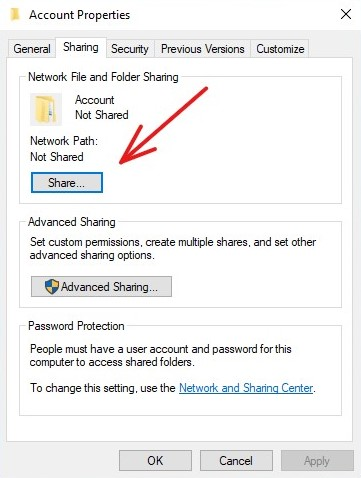 و سپس بر روی دکمه Add در پنجره باز شده از منو کشویی کاربر جدید را که ساختید انتخاب کنید و بر روی
دکمه
.کلیک کنید Share
.با نمایش این صفحه فولدر شما به اشتراک گذاشته شد
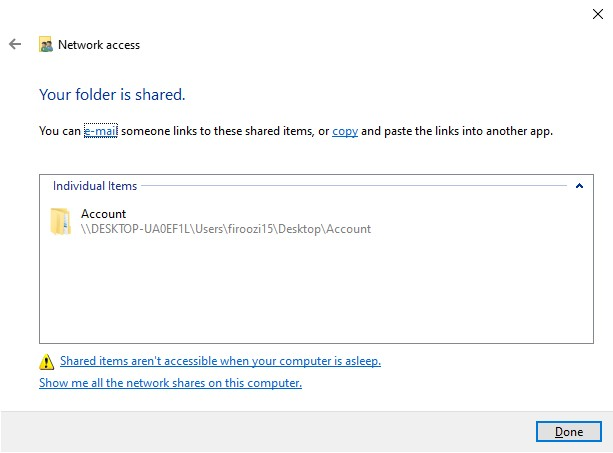نمایش فایل ها در اندروید
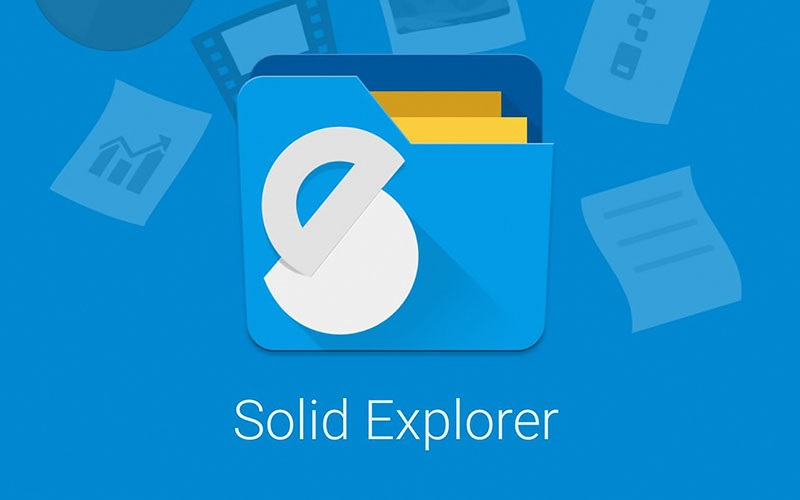.را نصب کنید Solid Explorer در ابتدا نرم افزار
.را انتخاب کنید New Cloud connection پس از نصب از منو کشویی + گزینه
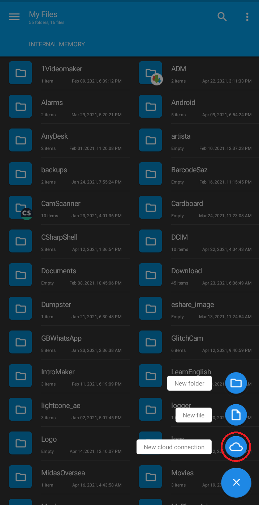.را انتخاب کنید LAN/SMB در پنجره باز شده گزینه
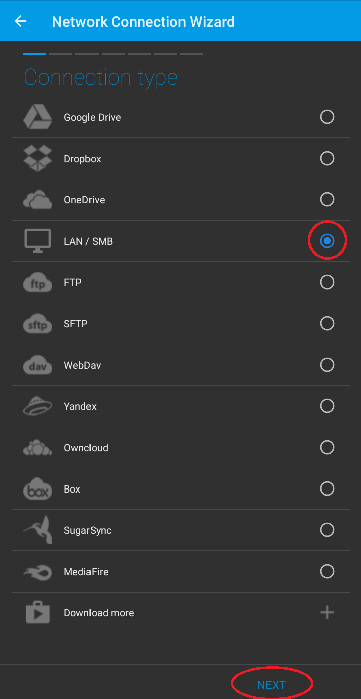.بر روی کامپیوتر اشتراک شده کلیک کنید
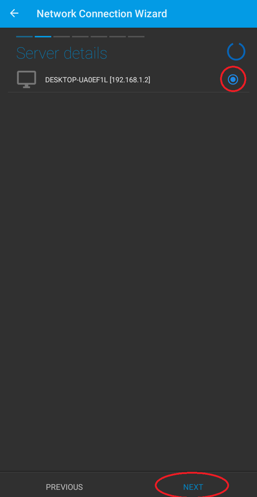.کلیک کنید Username and password بر روی
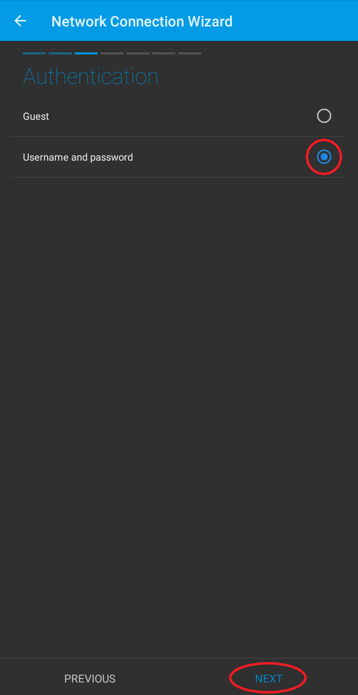.که در مرحله 1 ساختید وارد کنید Username and password
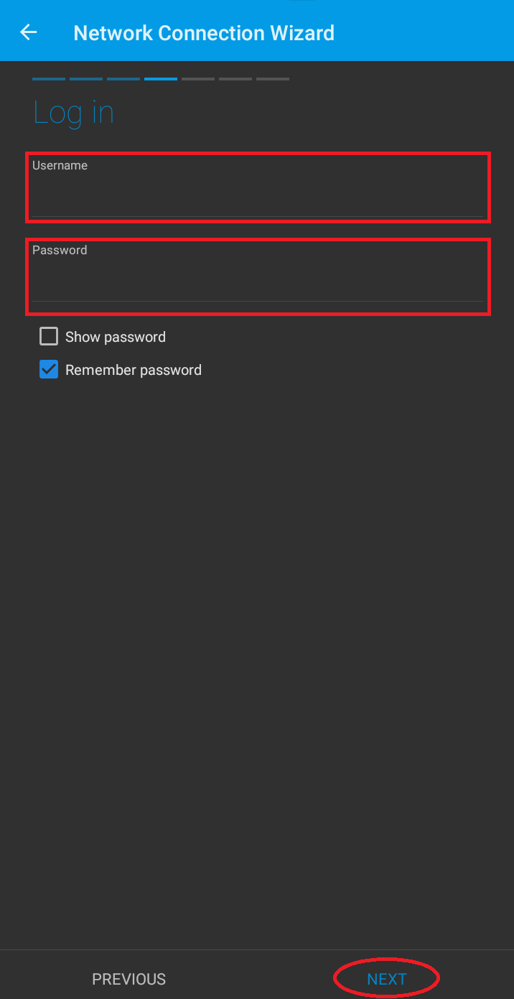.کلیک کنید Connect بر روی
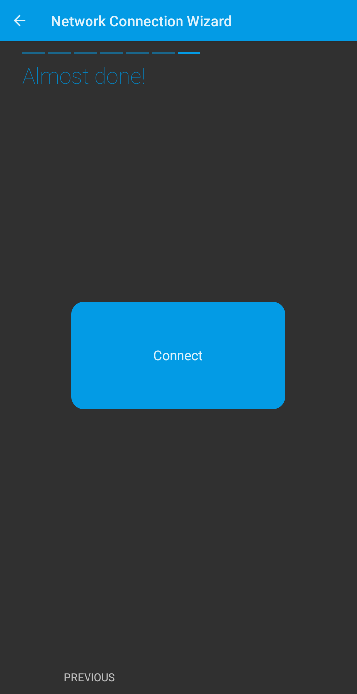.اگر همه مراحل درست انجام شده باشداین تصویر نمایش داده میشود
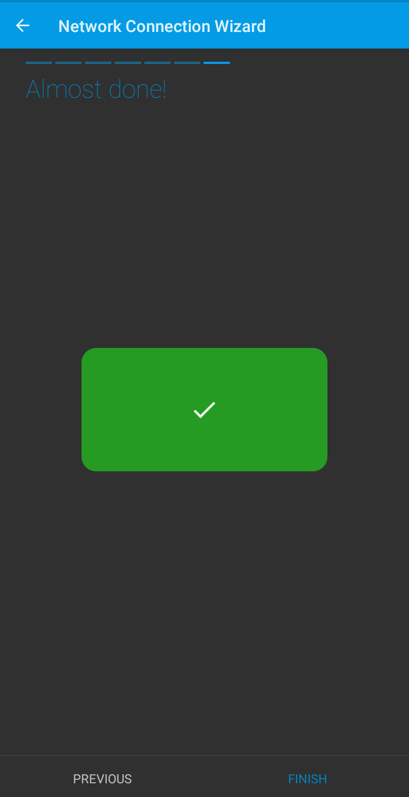.حال در منو اصلی گزینه جدیدی نمایش داده میشود که میتوان فولدر اشتراک گذاشته شده را دید